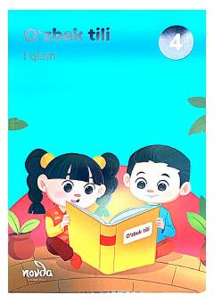

OTRus va qardosh tillarda taʼlim beriladigan maktablar uchun 4-sinf oʻzbek tili darsligi.
Ushbu darslik rus va qardosh tillarda taʼlim beriladigan maktablarning 4-sinf oʻquvchilari uchun moʻljallangan. Kitob oʻquvchilarda oʻzbek tilini oʻrganish koʻnikmalarini shakllantirishga va Vatan tuygʻusini rivojlantirishga qaratilgan.